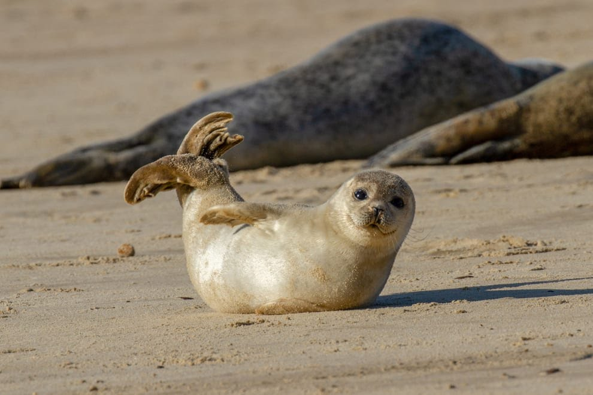

Hamid Jaeyoung Jahangir, Connoisseur of All Things Squishy
Seals, the Animals Most Squishy
Our Place in this World
Seals, the Animals Most Squishy
There are many round, adorable things in this world. I invite you, however to look upon this list of adorable creature as well as how Wikipedia defines them:- Harp Seals
- The harp seal (Pagophilus groenlandicus), also known as Saddleback Seal or Greenland Seal, is a species of earless seal, or true seal, native to the northernmost Atlantic Ocean and Arctic Ocean. Originally in the genus Phoca with a number of other species, it was reclassified into the monotypic genus Pagophilus in 1844. In Greek, its scientific name translates to "ice-lover from Greenland," and its taxonomic synonym, Phoca groenlandica translates to "Greenlandic seal."[2] This is the only species in the genus Pagophilus.
- Note, however, the absence of an important word.
- Hooded Seals
- The hooded seal or bladdernose seal (Cystophora cristata) is a large phocid found only in the central and western North Atlantic, ranging from Svalbard in the east to the Gulf of St. Lawrence in the west. The seals are typically silver-grey or white in color, with black spots that vary in size covering most of the body.[3] Hooded seal pups are known as "blue-backs" because their coats are blue-grey on the back with whitish bellies. This coat is shed after 14 months of age when the pups molt.[4] It is the only species in the genus Cystophora.
- Again, something is missing here!
- Caspian Seals
- The Caspian seal (Pusa caspica, syn. Phoca caspica)[1] is one of the smallest members of the earless seal family and unique in that it is found exclusively in the brackish Caspian Sea. It lives along the shorelines, but also on the many rocky islands and floating blocks of ice that dot the Caspian Sea. In winter and cooler parts of the spring and autumn season, it populates the northern Caspian coastline. As the ice melts in the summer and warmer parts of the spring and autumn season, it also occurs in the deltas of the Volga and Ural Rivers, as well as the southern latitudes of the Caspian where the water is cooler due to greater depth.
- Do you see it yet?
- Ribbon Seals
- The ribbon seal (Histriophoca fasciata) is a medium-sized pinniped from the true seal family (Phocidae). A seasonally ice-bound species, it is found in the Arctic and Subarctic regions of the North Pacific Ocean, notably in the Bering Sea and Sea of Okhotsk. It is distinguished by its striking coloration, with two wide white strips and two white circles against dark brown or black fur.
- But really, what could it be? What is so terribly wrong with these definitions?

Our Place in this World
Before we get into the most important matters, it is perhaps important to reflect upon our place in the world. Take a look at this graph and notice how many people are in YOUR country per kilometer squared.
No matter how many people live in your country, the most important perhaps is that there ARE people living in your country. People with their own lives, people with their own capabilities, troubles and worries. I'm sure many of you have grown close with your significant other little critter, whether it be something as small as an axolotl or have come to appreciate creatures vicariously, such as through YouTube.
I am sure, therefore, that a non-negligible amount of us have grown to love seals like myself. Have you known, however, that the seal population is declining? According to this link by the NOAA Fisheries, harbor seals have undergone a long-term decline in the Aleutian Islands. Just take a look at how it was in 2008.
It may seem like the seal population in the video is abundant, but seals often congregate in much larger amounts in order to fully ward off any potential threats to their livelihood. That is why we cannot let the tragedies that almost drove one seal species on the brink of extinction happen once more. If you have known love for any one in this world, I urge you to donate to seal preservation agencies such as Pinnipeds to protect these little squishy babies.
Back to Top